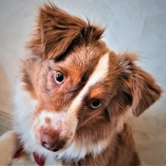

Qui suis-je?
- Nathalie Gomez
- Guyancourt (78280)
- Educatrice Spécialisée depuis 15 ans à l'APAJH
- Diplômée en Médiation Animale en 2020 par l'AZCO
- ACACED en juin 2021 avec le CFPPA
Qui est Sweetie?

- BAM (Berger Américain Miniature)
- Certifiée "Chien médiateur" par CLEMA
- Suivi par :
- La Clinique vétérinaire de Trappes.
- Et
- Aurore Chartie, comportementaliste canin spécialisée en médiation par l'animal.